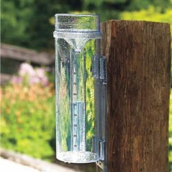
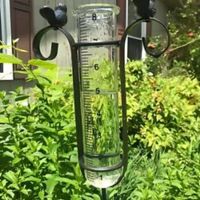
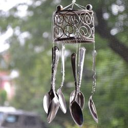
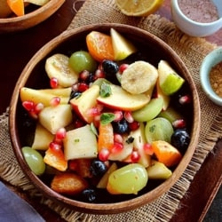
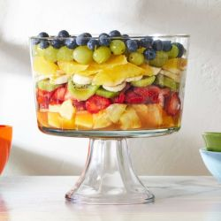

“Rain is grace; rain is the sky descending to the earth; without rain, there would be no life.”
– John Updike
Rainy days bring a refreshing charm, with the rhythmic sound of raindrops and the perfect excuse to enjoy cozy moments and comforting delights.
Here we have some ideas on seasonal activities to do and delicious food to enjoy summer to the fullest
Activities to DO
• Make Paper Boates •
Paper boats are a simple joy, especially during the rainy season. Folding them is a fun activity that sparks creativity and brings people together. Watching them float in puddles or streams adds a touch of magic to rainy days and creates lasting memories of childhood adventures.
• Build a DIY Rain gauge •
A DIY rain gauge is a fun and educational project to measure rainfall during the rainy season. It can be made using simple materials like a plastic bottle, ruler, and stones for stability. Observing the water levels in your homemade gauge helps you understand weather patterns while adding excitement to rainy days.
 
• Make Watercolor Paintings with rain-water •
Using rainwater for watercolor paintings is a unique way to connect with nature. The subtle, soft tones rainwater creates on paper can add a delicate, natural effect to your artwork.
• Dance in the Rain •
Dancing in the rain is a joyful way to embrace the wet weather and let go of worries. It’s a liberating experience, allowing you to enjoy the fresh, cool air while splashing through puddles. Whether alone or with others, dancing in the rain invites fun and spontaneity, turning an ordinary rainy day into a playful celebration of nature.
• Make Diy Wind chimes •
DIY wind chimes are a delightful project that brings music to your outdoor space during breezy days. Made from materials like bamboo, metal, or even seashells, they create soothing sounds as the wind moves through them. Crafting your own wind chimes allows for creativity while adding a personal touch to your garden or balcony. It’s a peaceful way to enjoy the calming effects of both wind and sound.

Food
• Hot Bajjis, Kachodies, Samosas or Pakodas with Chilli-Coriander chutney and ginger tea •
Rainy days are the perfect excuse to indulge in crispy hot snacks like bajjis, kachodis, samosas, or pakodas, paired with a zesty chilli-coriander chutney. The warmth and crunch of these treats, combined with the refreshing spice of the chutney, make them irresistible. To complete the experience, enjoy them with a steaming cup of ginger tea, which adds a comforting touch.
• Hot bowl of Ramen or Instant Noodles with Eggs or Panner if you're Vegetarian •
A hot bowl of ramen or instant noodles is the perfect comfort food for a rainy day. Add eggs for a protein boost or paneer if you're vegetarian, making the dish even more satisfying. The warm, savory broth paired with the noodles creates a cozy meal that’s both quick and delicious.
• Soup and dumplings •
Soup and dumplings are a classic comfort food, especially on chilly, rainy days. The rich, warm broth soothes, while the soft, flavorful dumplings add a hearty touch. Whether filled with vegetables, meat, or tofu, they create the perfect balance of texture and taste.

• BBQ or Tandoori Chiken/Paneer •
BBQ or tandoori chicken and paneer are a flavorful treat, perfect for rainy evenings. The smoky, charred taste from grilling or baking these dishes adds a unique depth of flavor, enhanced by rich marinades. Whether you're a meat lover or a vegetarian, the juicy chicken or spiced-up paneer makes for a satisfying meal. Served with a side of chutney or naan, it's an irresistible option for cozying up on a rainy day.
• Fruit Chat •
Fruit chaat is a refreshing and tangy snack, ideal for a light bite during the rainy season. Mixed with a variety of fresh fruits like apples, pomegranates, and oranges, it's seasoned with spices like black salt, cumin, and a dash of lemon juice. The burst of flavors from the sweet, sour, and spicy elements makes it a delightful treat.
 